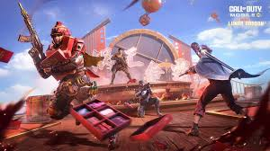

بتل رویال چیست؟
بازیهای بتل رویال شامل دهها تا صدها بازیکن است که با حداقل تجهیزات
شروع میکنند و سپس باید تمام حریفان دیگر را از بین ببرند و
در عین حال از گیر افتادن در خارج از یک «منطقه امن» کوچکتر اجتناب
کنند، و برنده آخرین بازیکن یا تیم زنده است.
معرفی چند بازی در سبک بتل رویال
کالاف دیوتی موبایل
یک بازی ویدئویی رایگان تیراندازی است
و توسط اکتیویژن برای آیاواس و
اندروید منتشر شدهاست.
گرافیک کالاف دیوتی موبایل
بازی دارای گرافیکی بسیار واقعگرایانه است که شما را در میان میدان نبرد قرار میدهد و هیجان و وحشت واقعی نبرد را میتوانید تجربه کنید. محیطهای بازی دارای جزئیات بالایی هستند و تا جایی ممکن به واقعیترین شکل ممکن طراحی شدهاند. سلاحهای بازی هم از روی مدلهای واقعی ساخته شده و تفاوتی با مدل ندارند.
اپراتورها انیمیشنهای خوبی دارند و احساس تکراری یا خستهکننده بودن نخواهید داشت؛ با این حال باگهایی نیز گاهی دیده میشود، به عنوان مثال برخی از اپراتورها پس از کشته شدن از روی زمین محو میشوند. محیط بازی دارای نورپردازی بسیار خوبی است و درنتیجه بافت بازی جزئیات بالایی داشته و به خوبی طراحی شده است.
صداهای بازی نیز کاملا شبیه به واقعیت طراحی شدهاند. شما میتوانید صدای پای دشمنان نزدیکتان را در جهات مختلف بشنوید، صدای شلیک هر اسلحه منحصر به فرد بوده و همانند مدل دنیای واقعی است؛ صدای انفجار نارنجکها نیز همانند نارنجکهای واقعی ساخته شده است. با این حال گاهی اوقات صدای نارنجکها ضعیفتر شنیده شده و شبیه به ترکیدن یک ترقه به نظر میآیند.
گیم پلی کالاف دیوتی موبایل
بازیکنان در این بازی میتوانند بین بازی ردهبندی یا ranked و بازی غیر ردهبندی یا non ranked انتخاب کنند. بازی دارای دو اعتبار یا پول است، اولین اعتبار کردیتها هستند که با بازی کردن به دست میآیند و پول دوم همان سی پی کالاف دیوتی است که با پول واقعی باید آن را بخرید. با این حال بازی تاکیدی روی خرید درون برنامهای ندارد و میتوانید به شکل کاملا رایگان از آن لذت ببرید.
در کنار پیدا کردن بازیکنان تصادفی برای حالت چندنفره و بتل رویال، میتوانید یک روم اختصاصی بسازید تا با دوستان خود بازی کنید. این بازی دارای حالات چند نفره، بتل رویال و زامبی است که هرکدام گیم پلی متفاوتی به شما ارائه میکنند. در ادامه هر یک از این حالتها را بررسی میکنیم.اگر علاقه مند به بازی های اکشن موبایل هستید مورتال کامبت موبایل نیز یک بازی پرطرفدار است.
چندین عکس از بازی کالاف دیوتی موبایل
برای دانلود بازی کالاف دیوتی موبایل کلیک کن
فری فایر
در بازی فری فایر بازیکنان یک شخصیت را در منظر سوم شخص کنترل میکنند و از جوی استیک برای حرکت استفاده میکنند. دکمه آتش به آنها امکان شلیک و پرتاب وسایل را میدهد. شخصیت میتواند اعمالی مانند پریدن، خزیدن و دراز کشیدن را انجام دهد.
گرافیک فری فایر
فری فایر یکی از برترین بازیهای موبایلی از لحاظ گرافیک و قدرت پردازشی است. این بازی ظرفیتهای فوقالعادهای دارد و میتواند تجربه متفاوتی را به گیمرها ارائه دهد. بازی فری فایر با استفاده از موتور گرافیکی یونیتی اجرا میشود. یونیتی یکی از برترین و معروفترین موتورهای بازی است. این یک موتور گرافیکی از سیشارپ و یک ویژگی کشیدن و رها کردن استفاده میکند که تصاویر نرمی را میسازد و از سوی دیگر امکان ساخت گرافیک و اسکریپت 2 بعدی و سهبعدی را فراهم میکند.
یکی از نکات فوقالعادهای که درباره گرافیک بازی فری فایر وجود دارد، نرخ FPS فوقالعاده این بازی است. شبیهسازهای اندرویدی قویترین دستگاههایی هستند که میتوان فری فایر را بر روی آنها نصب و اجرا کرد. آخرین بررسیها نشان میدهد که بازی فری فایر در شبیهسازهای اندروید توانسته است که نرخ 120 FPS را به پلیرها ارائه دهد که این نرخ در حد بازیهای کنسولی است.
رزولوشن یکی دیگر از مواردی است که پلیرها توجه بسیاری به آن دارند. اگر بازی فری فایر را بر روی قدرتمندترین دستگاهها یعنی شبیهسازهای اندروید اجرا کنید، میتوانید از رزولوشن 4k لذت ببرید. تنها کافی است که به display بروید و در این بخش روی کادر کنار 3840*2160 کلیک کنید که مربوط به وضوح 4k است. در آخر نیز برای اجرای تنظیمات جدید خود، روی ذخیره تغییرات کلیک کنید.